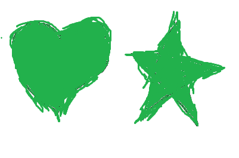
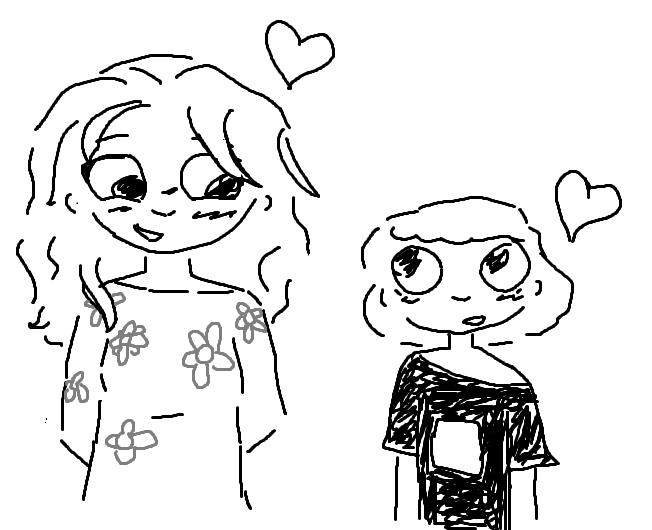

Dizem que o amor é algo biológico, um mecanismo para proteger os mais próximos, as próprias criações.
Eu discordo, este amor é único, um amor de mãe, raro e abstrato.
Tu sempre estiveste lá para mim,
nos piores, nos melhores, nos mais raros e vulneraveis momentos.. tu estavas lá.
Nunca me abandonaste, pelo contrário...
foste tu quem abandonaste várias oportunidades, por mim, por mim e pelo que amavas, por aquilo que querias ver crescer.
Díficil acreditar que vim de ti... somos tão diferentes...
Tu criaste-me e ensinaste-me a ser pessoa... a crescer, a ser feliz, a ver a vida com olhos de ver.
E quero que saibas, que por mais que tenha vontade de retribuir, nunca conseguirei completamente, mas farei o meu melhor.
Tudo por amor, não é?
Por amor e por tudo o que podiamos ser no passado e futuro.
Eu amo-te profundamente.
Para além do mundo físico e a compreensão humana.
Eu amo-te!

